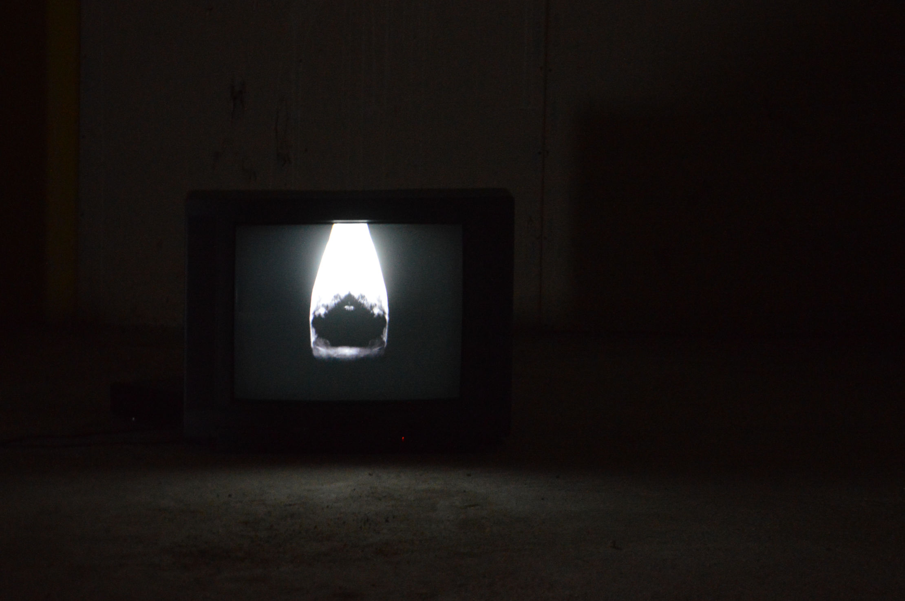

Texts (excerpts) / Texte (Auszüge)
[...] “When History Returns, opens with works that address the persistence of historical traces and the ways cinema re-inscribes them anew. Here, images mythologise, allowing erased or spectral presences to step back into the present. Testimonial voices, ghostly figures, and sculptural gestures act like alternative archives, turning film into a medium through which history’s absences can be both witnessed and transformed.” [...] “In Troscurpos: From the Crowd to the Wind (Arnaldo Drés González — Venezuela/Germany — 2024), the viewer is immersed in an aquatic imaginary rejecting direct representation“. [...] “an oil drilling machine and the shadows of colonial ships, the film navigates the afterlives of imperial violence“. [...] “The work builds a world from stark architecture pierced by darkness, a cinema of experience rather than meaning, where everything circulates, stretches, and dissolves. The film becomes the very site of emergence for a history without a fixed origin”.
Louise Bouvet-Zieleskiewicz
Presented within the framework of the group exhibition “SPEAK VOLUMES”, excerpt from the exhibition text: Project Betula Screening Series, curated by Sofia Kuznetsova and Daria Gnatchenko, held at Out of the Blue Cinema, Paris, France, 2025.
/
[...] “the human body is signalled by dislocated and reassembled parts of the physique, by teeth, fingers, limbs, tongues, heads, anything that might be involved in an attempt to articulate the individual’s uprooted, exposed state. Whether or not these statements of a person’s mute isolation and fragmentation can be understood or conveyed is an entirely different matter. Likewise, his photography is neither documentary nor what one might awkwardly call “photographic” art. The series of images titled Shelter and Presence showing a figure or body shrouded in green cloth in various locations and habitats – the works on display in the Srishti Art Gallery are just a sample from this ongoing project started in 2012 describing the condition of a rootless, migrating body – suggests a performative narrative. González enacts these instances of fragility and exposure – often before the eyes of incidental, puzzled bystanders – always with the aid of the same piece of green fabric, inspired by the chance observation of green tarp cladding a historic building on the Canary Island Tenerife. The journey of the mummed green figure is an unfinished story that resonates in his drawings.
[...] The transient self circles from the outside in an attempt to penetrate the centre. In the photographs and videos we witness the existential solitude of this quest. His restless but vigorous drawings undertake much the same quest for a centre within the artist’s identity. The fact that González is an exile from the very torn society of Venezuela on the far side of the Atlantic and now resides in the altogether alien surroundings of Hamburg in northern Europe is hardly incidental to these motifs. Yet the perception and sensibility that permeate his work are not a product of these circumstances: rather, they derive from his development as an artist and from the questions he has always asked of himself and of the world around him.”
Matthew Partridge
As part of the group exhibition “TOPOGRAPHIES OF TENTS, TERRACOTTA AND TIME”. Excerpt from the exhibition catalogue. Presented at Srishti Art Gallery, Hyderabad, India, and galerie holzhauer hamburg, Germany, within the framework of India Week Hamburg and altonale, 2025.
/
[...] “From a slightly different perspective, the same question is inherent in the artwork of Arnaldo Drés González: He emigrated from Venezuela to Germany. Thus, his social, cultural, political, and linguistic environment drastically changed. If the environment is not only perceived by us but additionally changes us (our brain) , the question arises of how much a radical shift in the environment associated with immigration changes one’s own identity, and to which extent one’s past identity can or should be protected and preserved. From the perspective of an immigrant, Arnaldo Drés González, thus, contributes to the political debate about the request that immigrants are supposed to integrate into their new country. Additionally, González adds an immigrant’s perspective to the perspective of the host country.”
Prof. Dr. Brigitte Röder
As part of the group exhibition “TOPOGRAPHIES OF TENTS, TERRACOTTA AND TIME”, curated by Matthew Partridge, excerpt from the exhibition catalogue. Presented at Srishti Art Gallery, Hyderabad, India, and galerie holzhauer hamburg, Germany, within the framework of India Week Hamburg and altonale, 2025.
/
„Die Problematik der Migration, der Fremdheit und Eigenarten von Heimat und Ausland im Bezug auf seinen eigenen Körper, sein Denken, Fühlen und Handeln sind ein fester Bestandteil der künstlerischen Auseinandersetzung von Arnaldo González geworden. In diesem Kontext sind sehr eigenwillige, hervorragende Filme, Fotos, Objekte, Überzeichnungen und Künstlerbücher entstanden, die mittlerweile in einigen Ausstellungen gezeigt wurden. Bei der Altonale 2015 mit dem Thema Solidarität wurde sein Beitrag mit dem zweiten Preis ausgezeichnet.
[...] Schon in Venezuela hat sich der Künstler, neben der Zeichnung mit dem Medium des Videos und der Fotografie auseinandergesetzt und im Masterstudium die Technik des digitalen Filmschnitts verfeinert. Hierbei nutzt er äußerst professionell die digitale Filmtechnik des Schneidens, Zerstückelns, Zeitraffens, Spiegelns, Animierens und wieder neu Zusammensetzens. Die Filme sind vorwiegend in Schwarz-Weiß gehalten, um die Hell-Dunkelkontraste zu verstärken. So können die Übergänge vom Mikrokosmos zum Makrokosmos, vom Positiv- ins Negativbild und horizontale oder vertikale Kameraverläufe von der Ferne in die Nähe einerseits geglättet, andererseits aber auch elegant überblendet werden. Arnaldo González schafft es nicht nur im Film die Transformation seiner eigenen Identität, seine durch Migration bewegte Gefühlswelt und kontemplative Zustände zu erschaffen. Es sind gewissermaßen seine Impulse, die er visualisiert und die Betrachter spüren, wenn sie sich auf sie einlassen. Es sind kosmische Zwischenwelten, die nicht wirklich erscheinen und dennoch existieren. Das macht die hervorragende Qualität der künstlerischen Arbeit dieses Künstlers aus.
Nun lebt der Künstler schon viele Jahre in Hamburg und längst haben ihn auch andere Themen eingeholt. In seinen aktuellen künstlerischen Arbeiten beschäftigt sich Arnaldo González mit den Verbindungen zwischen Zeichnung und mentaler Kartografie. Er versucht in seiner Vorstellung über Distanz und Distanzierung zu seinem Heimatland Venezuela nachzudenken. Immer jedoch bleibt in dieser post-migrativen Auseinandersetzung die Problematik der Suche nach Identität, des Verlusts und Gewinns von Heimat und Gefühl. Die Kunst ist es in jedem Fall, die ihn mit beiden Kontinenten verbindet. Sie gibt ihm Halt und die Gewissheit, dass wir alle miteinander vernetzt sind. Das macht die Arbeit von Arnaldo González so wertvoll“.
Prof. Michael Dörner
As part of the group exhibition “ZHN JHR LVL N”, excerpt from the exhibition text. Presented at Level One, Hamburg, Germany, 2022.
/
“Scholars say that there are currently about 700 languages that in theory share the same origin, that is, they descend from a single language used about 15,000 years ago. At present, language differences have made it difficult for humanity to achieve greater unity, to become a barrier that separates rather than unite. The young Venezuelan Arnaldo Gonzalez residing in Germany who has suffered the weight of the language barrier upon arriving to that country, has assumed his intervention with „the tongue“, the organ that articulates our sounds, which would make it the largest responsible for this lack of unity, with his image he invites us to stop building our individualities to rather walk together in harmony, because sometimes with silence we can speak and be understood”.
Cesar Sasson
Excerpt from the project “Intervenciones en la Foto de mis Hijas”
Published digitally by the Sasson Collection, Caracas, Venezuela, 2022.
/
[...] „González’ künstlerische Odyssee umfasst die Essenz der Metamorphose, ein Thema, das kunstvoll in das eigentliche Gewebe von «Resguardo y Presencia» eingewoben ist. Der grüne Stoff, der sowohl das Herzstück als auch das Rätsel ist, wird durch eine Reihe von Fotografien enthüllt, die in Umfang und Dimension variieren, begleitet von Video-Kunstwerken. Innerhalb dieser Oase der Betrachtung wird die Symbolik des grünen Stoffs zum Mittelpunkt unserer Introspektion, ein Spiegel, der die Flüssigkeit der Bedeutungen in einer sich ständig wandelnden Realität reflektiert.
[...] Während wir uns mit jedem Bild befassen, tauchen wir in unterschiedliche Erzählungen ein. Der grüne Stoff, verbergend und enthüllend, tritt in einen bewegenden Dialog mit den Hintergründen, die ihn umrahmen. Ob es sich um das geschichtsträchtige Winikunka handelt, geschmückt mit seinem siebenfarbigen Glanz in Peru, oder um die stillen Erinnerungen eines deutschen U-Bootes, das einst in den Tiefen der Geschichte wandelte, González’ Schöpfung fügt disparate Landschaften, Epochen und Kulturen zusammen. [...] Jedes Bild lädt uns zu einer geistigen Reise ein, voller Schönheit, aber auch umgeben von Intrigen und Geheimnissen“.
Santiago Rago
From the exhibition text “RESGUARDO Y PRESENCIA”. Presented at Galerie 21, Künstlerhaus Vorwerk-Stift, Hamburg, Germany, 2022.
/
[...] „Lonas del Jardín“, eine zeltartige Konstruktion aus Materialen, die der Künstler auf den Straßen Hamburgs gefunden hat. Eine riesige Gartenplane ist über dicke Äste drapiert und bietet so vermeintlich Schutz. Auf der Plane ziehen sich lange Linien über blaue, gelbe, rosa und schwarze Flächen und erinnern so an eine Landkarte.
Durch ihren nie gänzlich identischen Aufbau drückt die Arbeit eine gewisse Fragilität, die durch die Durchlässigkeit der Konstellation verstärkt wird. Das „Zelt“ bietet einen Ort für Rückzug und vermittelt gleichzeitig ein Gefühl von Schutzlosigkeit.
Der Verlust von Heimat und dem gewohnten Rückzugsort durch Migration verdeutlicht welch starken Einfluss die Umgebung, und wie man sich in ihr fühlt, auf die eigene Identität haben. Dieses übergreifende Thema der physischen und mentalen Zuflucht und einem Ort dafür (oder der Suche danach), ist ein zentraler Bestandteil der menschlichen Erfahrung, die in González Kunst verarbeitet wird.
Sein kartografisch anmutender Malstil zieht sich durch viele seiner Kunstwerke, wie seine Zeichnungen auf bedrucktem oder unbedrucktem Papier. Durch diese Bildsprache wird betont, dass der Mensch immer physisch in der Welt situiert ist, und sich selbst dadurch auch nie ohne äußere Einflüsse wahrnehmen kann.
[...] In der Ausstellung findet ein Zusammenspiel von Figuration und Abstraktion des menschlichen Körpers statt, dass nicht nur die Diaspora des Künstlers für die Betrachter:in erlebbar macht, sondern auch Projektionsfläche für die eigene Realität bietet“.
Hannah Bode
From the exhibition text “Arnaldo Drés González”. Presented at the Affordable Art Fair Hamburg as part of the “Emerging Artist” section, Germany, 2021.
/
[...] „Mein Körper ist mein Material. Mit ihm reflektiere ich meine Situation, denke und arbeite ich.“ (Arnaldo González) Der eigene Körper ist also das Werkzeug des Künstlers, gleichzeitig Subjekt und Objekt der Arbeit. Auch wenn Arnaldo González einen eigenständigen, sensiblen, persönlichen Ansatz in seiner Kunst zeigt, steht er damit in guter Tradition, verweist auf Anfänge der Videokunst, in der Künstler wie Vito Acconci und die Feministischen Avantgarde-Künstlerinnen Marina Abramovic´, Hannah Wilke und VALIE EXPORT bildhafte Analogien mit Erkundungen des eigenen Körpers ausgedrückt haben.
Schon 20 Jahre später, in den 1990er Jahren sind die technischen Möglichkeiten in Foto, Film, Fernsehen und Video explodiert. Und 2016 mit Fundstücken aus Internet und Warenwelt Kunst zu machen, ist für die heutige Enkelgeneration von Acconci, Abramovi´c, Wilke, VALIE EXPORT, von Konzeptkunst, Pop Art und Picture Generation selbstverständlich. Arnaldo González gehört dieser neuen Generation der Digital Natives an. Zu montieren, sich selbst mit der Omnipräsenz der Medien in Beziehung zu setzen, drücken die Videocollagen dieser jungen Künstler in vielfältiger Weise aus. „Jedes Video führt mich immer wieder zurück zur Betrachtung meiner eigenen Person, jedoch in ständig neuen Situationen. Teilweise wirkt es, als entstünde ich aus der Umgebung heraus. Die Umgebung formt mich – ich bin die Umgebung.“ (Arnaldo González). Der Künstler begreift Video als Medium, kleine Dinge, die er beobachtet, allein mit Vorstellungskraft groß werden zu lassen. Vielleicht kann man seine Leidenschaft, sich täglich und überall selbst zu fotografieren vor diesem Hintergrund als weitere Tagesroutine begreifen, das Selfie als eine Art Skizze ansehen.
[...] Ein Tick dunkel, irgendwie scary, ein bisschen sexy – das Beeindruckende der Videocollage IMPULS ist, dass sie beinahe so einfach, fast archaisch erscheint wie das erwähnte Acconci-Video, und man dennoch spürt, dass alle technischen Möglichkeiten der Bildbearbeitung, Softwareanimation, digitaler Simulation, des Sampelns, der zusätzlichen Gestaltung mit Ton, Farbe, Tempo zu dieser nicht linear strukturierten Videoassemblage ausgelotet worden sind. Der Künstler verliert dabei den Betrachter nicht aus dem Auge, sondern lädt ihn in verschiedene Gefühle und kontemplative Zustände ein, ohne sie ihm vorzugeben. Die Aufnahmen des Körpers und die der Körperdetails sowie die Landschaftsbilder fügen sich wie in einem Gedicht zu einer sinnlich poetischen Reise für den Betrachter zusammen. Die vorherrschende schwarz weiße Farbigkeit verstärkt Konzentration und Ausdruck. Bei der Präsentationsform über drei Kanäle und drei Leinwände wird die totale Auflösung des Raum-Zeit-Parameters schließlich noch deutlicher – und die Videokontemplation perfekt.
Angela Holzhauer
From the catalogue text “Impuls”, presented as part of the Master’s final project with the exhibition “IMPULS” at Westwerk, Hamburg, Germany, 2016.
/
Arnaldo Drés González
▼CV
e-mail:
info@arnaldogonzalezvisual.com
instagram: @adozalez